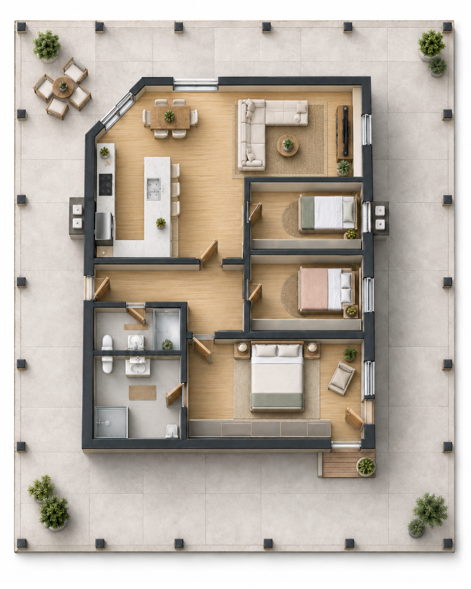
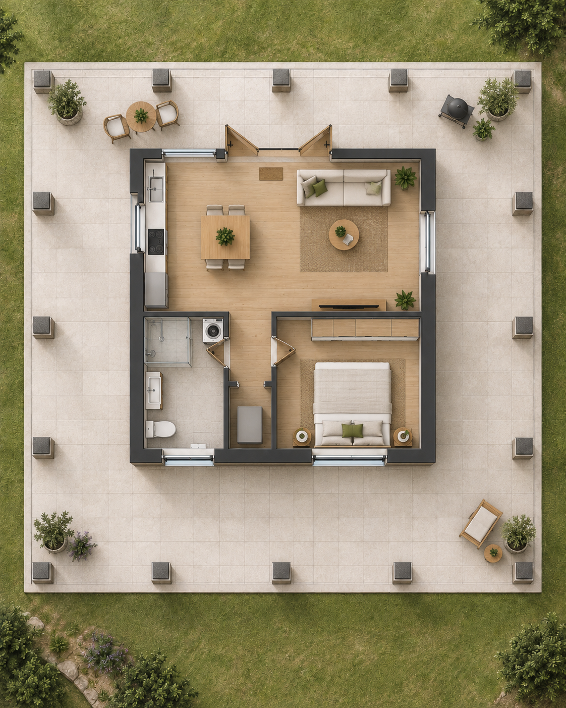
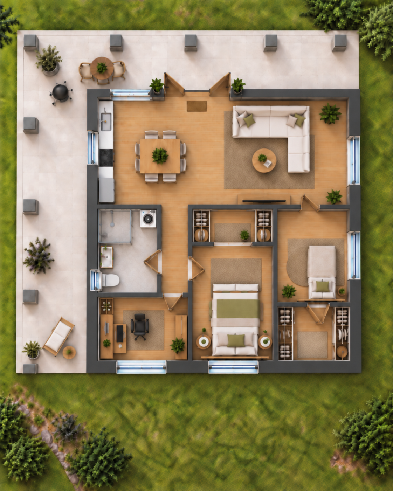
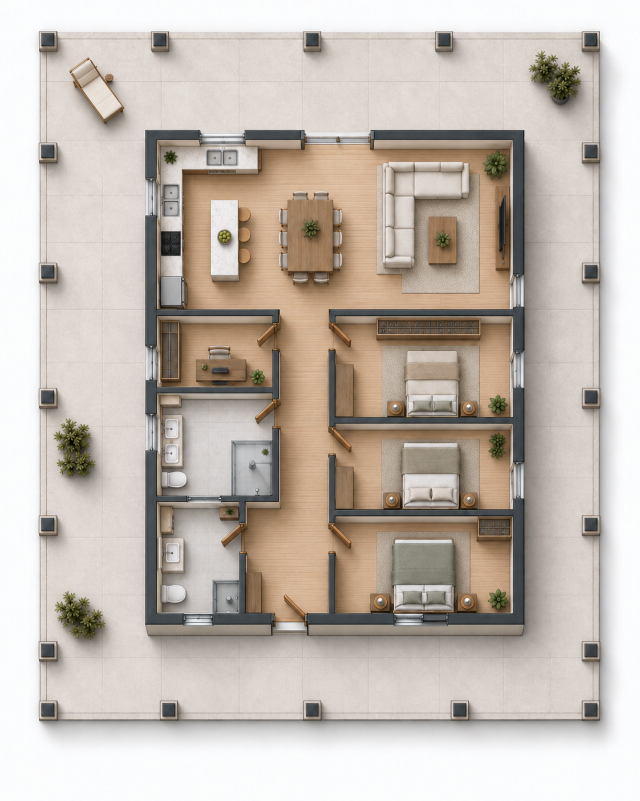

Plenty of room for life together
The existing home is ready to use right away. At the same time, the large property and two already prepared building areas leave room for guests, grandparents, adult children, or another fully independent home.
No need to start from zero
The property combines a move-in-ready home with plenty of room for future changes. You can settle in first and then decide at your own pace whether and how additional buildings or areas should be used.
Existing home
100 m² (about 1,076 sq ft) of interior living space, two bedrooms or flex rooms, two bathrooms, and a large wraparound terrace.
Additional building areas
A started bungalow and another larger concrete slab provide room for additional residential or utility buildings.
20 hectares / 49 acres of space
Residential area, cropland, pastures, and woodland allow for very different private projects without having to plan every square meter from day one.
From a couple to a larger family
The existing home can initially be used just as it is. The second room can serve as a child’s room, guest room, or home office. If more space is needed, the current house does not necessarily have to be remodeled: the prepared areas also make independent additions possible.
- bungalow as a guest house or a private area for parents or grandparents
- larger slab as a possible second family home
- carport area with additional design flexibility
- generous distance between living areas is possible without separating the family across different properties

Two prepared building areas, several possibilities
The smaller bungalow
The same slab can accommodate either a compact building with a large terrace or a substantially larger enclosed interior.
Strip footings run below the outer edge and below the originally planned exterior wall. A central cross wall also sits on a strip footing. Drain lines are already in place and provide some guidance for the wet-area layout.
The larger slab
The larger slab was likewise prepared with a perimeter strip footing. There is also a foundation line below a previously planned central wall, along with prepared rebar connections for columns around the outer edge.
An earlier plan used roughly 98 m² (about 1,055 sq ft) as enclosed interior space within a much larger covered footprint. The current concepts show how differently this area could be divided.
Smaller slab: two different concepts
Both images show the same smaller slab and illustrate how much the balance between interior space and covered terrace can change.


Larger slab: flexible enough for shared living too
In addition to a family home, the larger slab can also be imagined with several private retreat spaces, a home office, and shared living areas.

Family life does not stop at the front door
For a family, the real value of a 20-hectare property is not only the extra living space. Around the house there is room for a garden, animals, play areas, and quiet spaces. Cropland and pastures can be actively used, while large parts of the woodland can simply remain natural.
How intensively the property is used can be decided step by step. A family does not have to become a farming family simply because the option exists.

Does this perspective fit your plans?
All property facts, photos, location information, and the asking price are available in the full listing.
Back to the full property listing